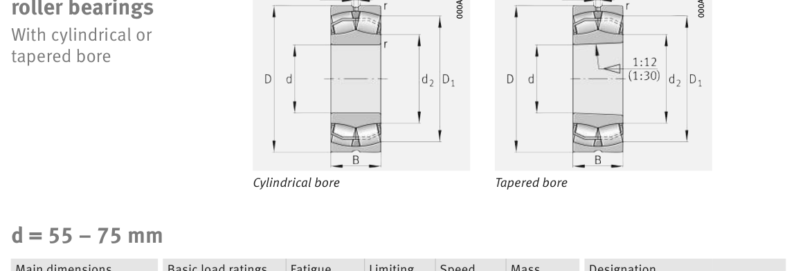

22213-E1-XL is a FAG spherical roller bearing, bore 65 mm, O.D. 120 mm, width 31 mm, dynamic rating 202 kN. Dimensions, drawing, interchanges and price.
Original catalogue drawing - FAG Schaeffler HR 1, page 698

Scanned from the manufacturer catalogue page listing this part number. All part numbers printed on that table share the same drawing.
Scale cross-section
Blue = inner / outer ring, yellow = rolling element. Drawn to scale from this part's own
dimensions for selection reference only - not a manufacturing or assembly drawing.
Dimension table (mm / inch)
Symbol
Dimension
mm
inch
d
Bore diameter
65
2.5591
D
Outside diameter
120
4.7244
B
Inner-ring / bearing width
31
1.2205
r
Chamfer (min)
1.5
0.0591
Notes
Weights are given in kg. Load ratings are shown in both the original catalogue units and the converted value (1 N = 0.2248 lbf). Data is provided for selection reference only - confirm against the latest official catalogue before ordering.
Main dimensions
Bore d (mm)
65
Outside dia. D (mm)
120
Width B (mm)
31
Inner-ring shoulder dia. D1 (mm)
107.3
Load ratings & speeds
Basic dynamic load rating Cr (lbs)
45411
Basic static load rating Cor (lbs)
47210
Basic dynamic load rating Cr (N)
202000
Basic static load rating C0r (N)
210000
Fatigue limit load Cur (N)
25500
Factor e
0.24
Factor Y0
2.75
Limiting speed nG (rpm)
7,000
Reference speed nB (rpm)
4,200
Weight
Weight (kg)
1.55
Mounting dimensions (fillets / shoulders)
Housing fillet r max (mm)
1.5
Shaft shoulder da (mm)
74
Housing shoulder Da (mm)
111
Housing fillet ra max (mm)
1.5
Bearing life (ISO 281 basic rating life)
C / P
Equivalent load P (N)
L10 (106 rev)
L10h at 2,300 rpm
4
50,500
102
736
6
33,667
392
2,844
8
25,250
1,024
7,420
10
20,200
2,154
15,612
15
13,467
8,323
60,315
Basic rating life per ISO 281: L10 = (C/P)10/3 with C = 202,000 N. Hours = L10 x 106 / (60n). Life-modification factors for lubrication, contamination and temperature (aISO) are not included.
Source & traceability
Brand
FAG
Source catalogue
FAG / Schaeffler Rolling Bearings HR 1
Catalogue page
p.698 (dimensions)
Load ratings in newtons, fatigue limit load Cur, limiting speed nG and reference speed nB.
Send us the quantity you need and we will come back with price and
lead time, normally within 24 hours. Equivalent parts from other brands can be quoted at the same time.